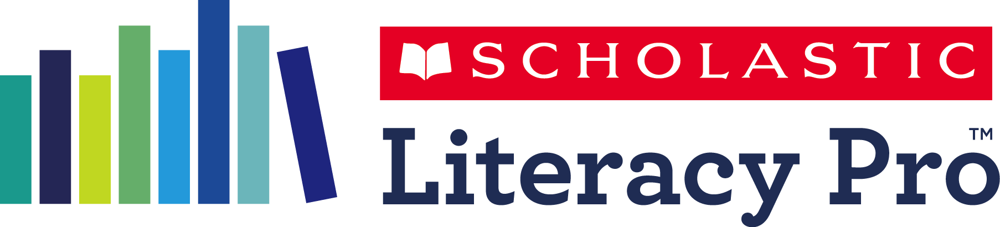

CommonClarity
A reporting dashboard that visualizes student standardized test data in a dynamic, interactive way.
Scholastic Learning Zone
An online platform that gives educators and students one-stop access to a growing portfolio of digital education resources.
Scholastic Literacy Pro
A research-based, online assessment resource that develops students into successful, proficient readers.
Literacy Pro Library
An easy-to-use eBook library that motivates independent reading, tracks student progress, and builds reading skills.
Judgmental Eye
A movie recommendations app that incorporates machine learning algorithms to recommend movies to users.

Storia
Scholastic's digitally curated library of eBooks and eReading resources.
Scholastic Reading Inventory
A computer-adaptive program that assesses student reading comprehension and provides actionable real-time data.